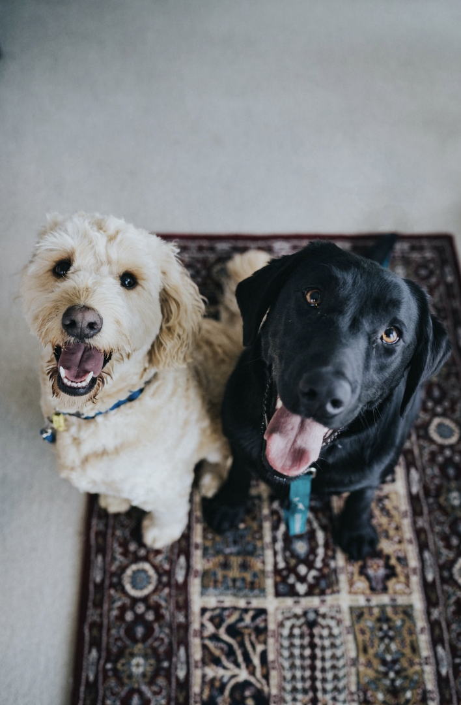

Dog Tips
Facts
The domestic dog is an extremely social animal and offers a diverse variety of choices as there are well over 300 breeds recognized by the World Canine Organization. Adopting a dog offers mutual benefits between dog and owner. Many studies cite the social benefits of having a companion as well as the reduced feelings of loneliness from adopting a dog. Studies even show medical indicators such as reduced blood pressure and improved lipid profiles. If you have a dog, it is important to make sure that you care for your dog; be mindful of what you feed your dog and provide enough opportunities for exercise. In this page, you will find more information about how to care for your pets throughout the various stages of their lives.
Stages of cats life
Diet & Exercise
Grooming & Handling Keeping your furry family member clean is important to its health. So be sure to brush frequently to reduce the amount of shedding and prevent matted and tangled fur that can prove to be extremely difficult to remove. Check for insects such as ticks and fleas, especially after visiting heavily wooded areas. Bathing is not only important to your dog’s health but can be an exercise depending on how strong willed the dog is. Rinse all of the soap out, as any residual soap can result in a rash. Be sure the soap is formulated for your puppy or dog, since harsh soaps can cause allergic reactions. And as always, be careful how you handle your loved one. No matter the size of your dog, you need to be cautious as you carry your canine. If you have a small dog, then cradle the pup with one hand under the chest and the forearm supporting the back half. If it is a large dog, reach under the belly with both your arms perpendicular to the dog, and use each arm to support the chest and rear as you lift.
